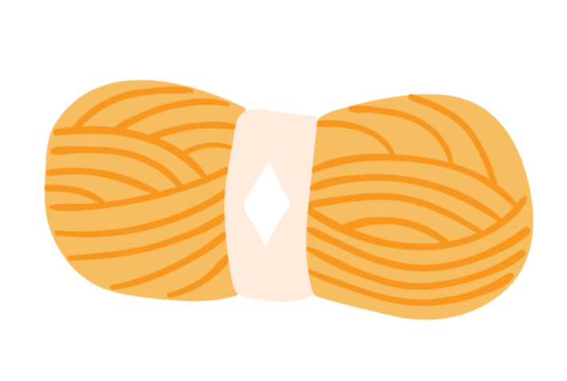
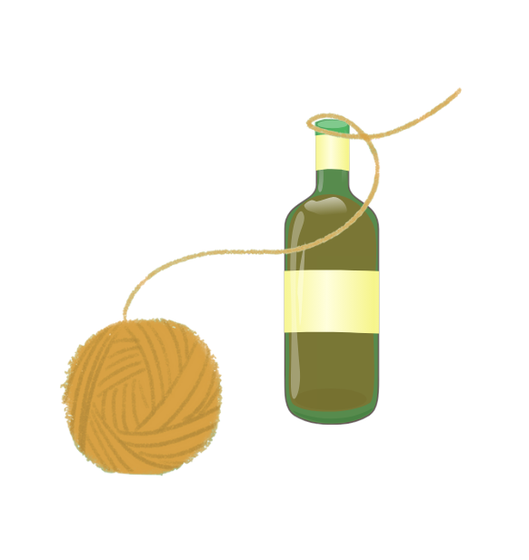
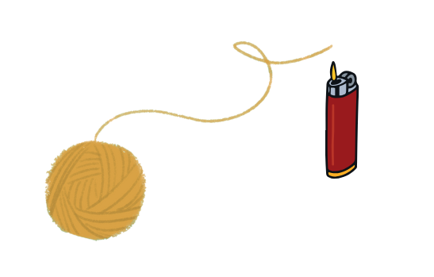
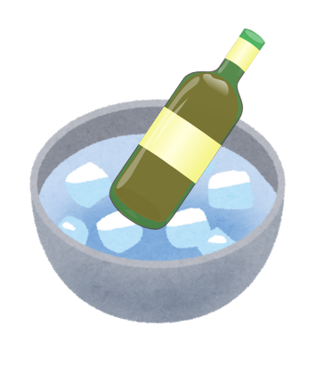
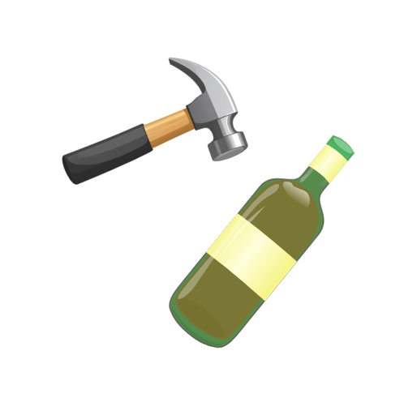
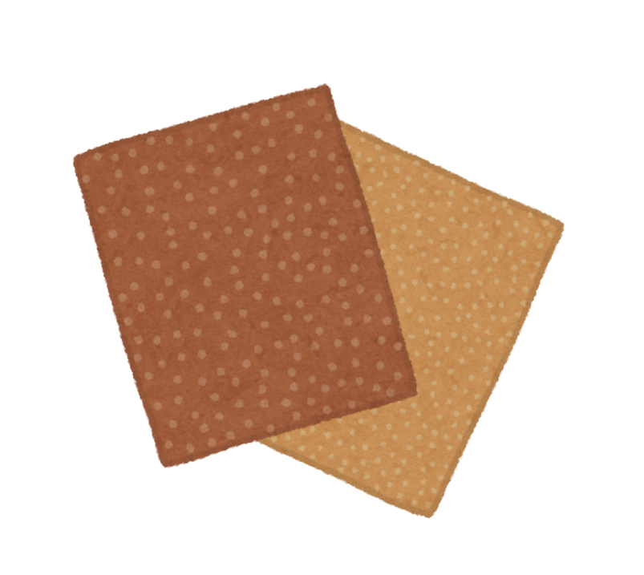
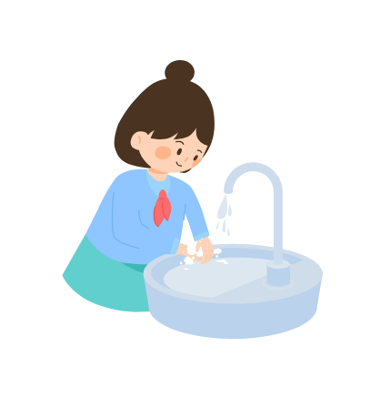

Empty the bottle and rinse it well.
Empty the bottle and rinse it well.
 Remove labels and corks by soaking the bottle in warm water.
Remove labels and corks by soaking the bottle in warm water.
 Inspect the bottle for cracks or chips; use only undamaged bottles.
Inspect the bottle for cracks or chips; use only undamaged bottles.

Soak the yarn in alcohol until fully saturated.
Wrap the yarn tightly around the bottle where you want to cut.
Carefully light the yarn and let it burn around the bottle.
Immediately submerge the bottle in ice or cold water.
Gently twist or tap until the bottle separates.
Smooth sharp edges with sandpaper or a glass file.
Wash thoroughly before using.